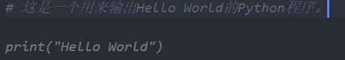
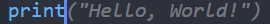
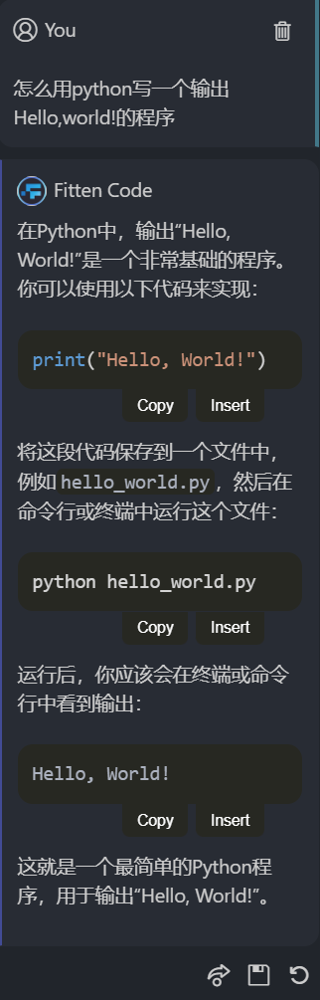

FittenCode
AI assistant是一个很不错的ai编程助手，但一个月需要支付8.33刀乐才能使用。想用免费的学生版，但认证过程又复杂繁琐。但我找到了它的平替——Fitten Code 插件。

Fitten Code是非十公司开发的，基于非十大模型的人工智能代码助手，主要有以下这些功能：
1. 代码自动生成
Fitten Code 可以根据你输入的注释生成代码。
按下 Tab 键，表示接受建议，这一段灰色的代码就会自动填充到程序里。
2. 代码自动补全
Fitten Code 可以根据你输入的代码自动补全。
同样按下 Tab 键，表示接受建议，这一段灰色的代码就会自动补全。
3. 聊天问答
Fitten Code 可以和你聊天，可以询问它关于代码 的问题。
他会很快的给你最好的解决方案和细致的讲解。
目前Fitten Code对于个人的使用是免费的，只要用Github账号或者邮箱登录，就可以使用。